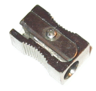
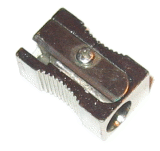
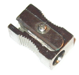
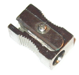

 


Mira en esta página:
http://code.google.com/p/ple-ieslosenlaces/source/browse/trunk/convertir_a_F.py
for <var> in <secuencia>:
<cuerpo del for>
El cuerpo de for puede ser una secuencia de sentencias.
La variable que va detrás de la palabra clave for se llama índice del bucle.
En cada repetición va tomando un valor de la secuencia y las instrucciones del cuerpo se ejecutan una vez para ese valor.
>>> for i in [0,1,2,3]:
print i
0
1
2
3
>>> for impar in [1, 3, 5, 7]:
print impar * impar
1
9
25
49
range es una instrucción de Python que produce una lista de números
>>> range(5) 0 1 2 3 4
Podemos usarlo para hacer bucles contados:
for <variable> in range(<expresión>):
El valor de expresión determina cuántas veces se va a ejecutar el bucle.